Amplificador generico¶
El diseño del amplificador sintonizado de pequeña señal de RF generalmente se basa en el requisito de una ganancia de potencia específica a una frecuencia dada. Otros objetivos de diseño pueden incluir ancho de banda, estabilidad, aislamiento de entrada-salida y bajo rendimiento de ruido. Después de seleccionar un tipo de circuito básico, se pueden resolver las ecuaciones de diseño aplicables. Los circuitos se pueden clasificar de acuerdo con la retroalimentación (neutralización, unilateralización o sin retroalimentación), y la coincidencia en los terminales del transistor (las admisiones del circuito coinciden o no con las entradas y salidas de los transistores). Se discutirá cada una de estas categorías de circuitos, incluidas las ecuaciones de diseño aplicables y las consideraciones que conducen a la selección de una configuración particular.
Consideranciones generales de diseño¶
Las ecuaciones que figuran en el texto de este informe son aplicables a las configuraciones de emisor común, base común o colector común, utilizando el conjunto de parámetros correspondiente (parámetros de emisor común, base común o colector común). Si bien se desarrolla principalmente el diseño de circuitos con transistores bipolares convencionales, la teoría de la red de dos puertos tiene la ventaja de ser aplicable a cualquier red activa lineal. Por lo tanto, el mismo enfoque de diseño y ecuaciones pueden usarse con los transistores de efecto de campo, los circuitos integrados o cualquier otro dispositivo que pueda describirse como una red activa lineal de dos puertos.
Considere un amplificador genérico de dos puertos que se muestra en la figura. Los circuitos de dos puertos lineales e invariante en el tiempo se puede describir usando cualquier conjunto de parámetros de dos puertos, incluidos los parámetros de admitancia Y, parámetros de impedancia Z, parámetros híbridos H o los parámetros de dispersión S.
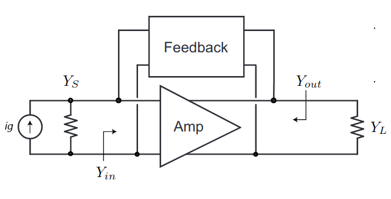
Los parámetros son genéricos e independientes de los detalles del amplificador, puede ser un solo transistor o un amplificador de etapas múltiples. Ademas, los transistores de alta frecuencia se describen más fácilmente mediante parámetros de dos puertos Los amplificadores realimentación a menudo se pueden descomponer en un amplificador unilateral equivalente de dos puertos y una sección de retroalimentación de dos puertos. Podemos sacar algunas conclusiones muy generales sobre la ganancia de potencia “óptima” de un puerto de dos puertos, lo que nos permite definir algunas métricas útiles.
Parametro admitancia¶
El circuito de un cuadripolo admitancia se muestra en la figura.

Las ecuaciones del cuadripolo en función de los parametros de admitancia y tensiones del circuito:
Admintacia de entrada¶

Del circuito, se puede calcular la admitacia de entrada dada una admitancia de salida \(y_{L}\):
Admintacia de salida¶
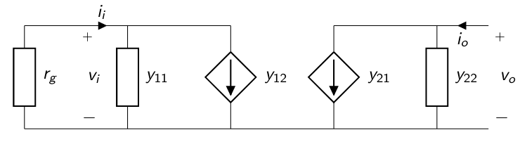
Del circuito, se puede calcular la admitacia de entrada dada una admitancia de salida \(y_{L}\):
Modelos equivalente para alta frecuencia¶
El modelo híbrido-pi puede ser bastante exacto para los circuitos de baja frecuencia y puede ser adaptado para circuitos de frecuencia más alta con el agregado de capacitancias y otros elementos parásitos al modelo.
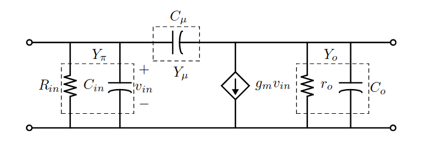
El modelo híbrido-pi puede relacionarse con los parámetros admitancia.
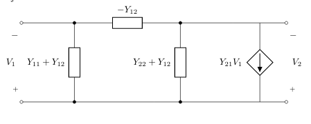
Técnicas de análisis de circuitos simple sintonizado.¶
Los circuitos sintonizados son una clase importante de circuitos que se encuentran en todos los transceptores inalámbricos. Los amplificadores sintonizados se emplean para amplificar un rango de frecuencias. Estos amplificadores al emplear circuitos sintonizados presentan la respuesta en frecuencia de un filtro pasabanda. Como ventaja, los circuitos \(LC\) permiten compensar algunas de los componentes parásitos de los dispositivos activos.
Como veremos, se pueden describir como filtros de paso y de segundo orden cuyo rendimiento se puede analizar y diseñar de manera muy similar a la de los amplificadores de baja frecuencia.
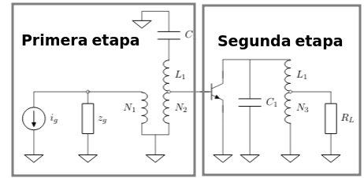
La figura muestra un amplificador realizado con un transistor NPN y etapas de sintonia. Cada una de estas etapas corresponde a un simple sintonizado.
A continuación, derivaremos expresiones analíticas para la ganancia de voltaje y la ganancia de potencia de las etapas de amplificador más comunes. Estas expresiones relativamente simples proporcionan información útil sobre el funcionamiento de los amplificadores sintonizados y un punto de partida bastante preciso para el diseño por computadora de amplificadores sintonizados.
Ganancia de tensión de una etapa simple sintonizada¶
Una etapa simple sintonizado se conforma por filtro \(LC\), que también suele diseñarse para adaptar las impedancias de la etapa.
Consideremos la topología básica, como la que se muestra en la Figura, de una etapa CE o CS con un carga RLC paralela resonante (circuito de sintonización simple). Para simplificar el análisis, la resistencia de salida del transistor y la capacitancia se incorporan en \(R\) y \(C1\).
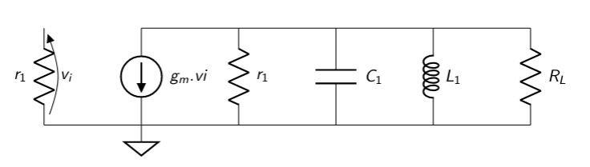
Al igual que a bajas frecuencias, e ignorando la capacitancia de Miller, la ganancia de tensión para el circuito simple sintonizado se expresa como:
Donde podemos normalizar la ecuación empleando los terminos \(Q\), ya presentado, y \(\omega_o^2 = \frac{1}{LC}\) como la frecuencia de resonancia.
Podemos remplazar el \(C_1 = \frac{Q}{R \cdot \omega_o}\)
Modulo y fase de la transferencia de tensión¶
La trasferencia de un simple sintonizado se obtuvo como
Para conocer la respuesta en frecuencia de la trasferencia, debemos remplazar \(S = j \omega\), donde \(\omega\) es la variable.
Operando.
Se obtiene entonces la trasferencia
El modulo de la trasferencia
La fase de la trasnferecnia
Normalización de la trasferencia¶
Dado que para el diseño de los amplificadores sintonizados es necesario conocer el rechazo que tendran algunas frecuencias respecto a la frecuencia de sintonia, es útil para esto emplear la trasferencia normalizada. Esta se obtiene mediante la relación entre la trasferencia respecto a la trasferencia a la frecuencia de sintonia.
donde \(|A_v|(\omega_o) = g_m R\).
Que también puede ser expresada en función de la frecuencia como
Simetría¶
Para una atenuación dada:
Simetría geométrica.
Ejemplo 1¶
Supongamos una etapa simple sintonizada a la frecuencia de \(f_o = 1MHz\), con un factor de selectividad de \(Q_c = 10\). El elemento activo tiene una ganancia de transconductancia \(g_m = 100 mS\) y la resistencia total de la etapa es de \(R_t = 100 \Omega\).
La transferencia de tensión en función de la frecuencia para este sistema (en escala semilog en la frecuecia).
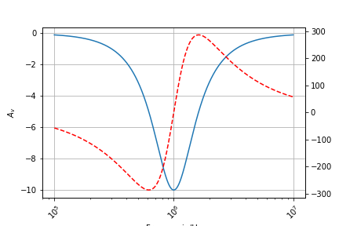
La transfencia en dB
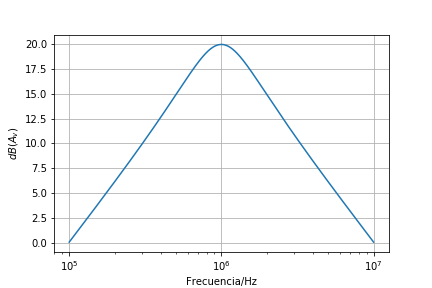
Diagrama de polos y ceros de un simple sintonizado¶
Volviendo a la expresión
La expresión puede ser rescrita como:
Donde los polos:
Donde podemos remplazar los siguiente terminos:
Factor comun \(-\omega_o^2\):
Si \(Q > 2\), podemos aproximar los polos a:
Siendo entonces la ganancia de tensión:
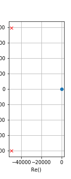
Ancho de banda¶
Las frecuencias donde la trasferencia
Como tienen que ser frecuencias positivas:
Aproximación de banda angosta¶
Partiendo de la respuesta en frecuencia del sistema.
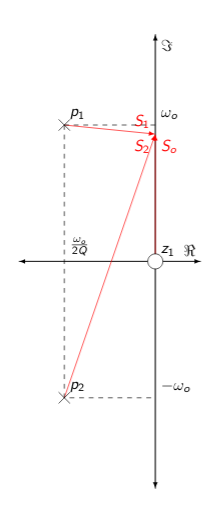
El diagrama muestra la respuesta en frecuencia del sistema para una frecuencia dada. Para esta frecuencia la transferencia puede ser calculada como:
Para simplificar el analisis, supondremos que los vectores \(S_o\) y \(S_2\) tienen una variación despresible respecto a las variaciones de \(S_1\). Luego demostraremos los limites de esta suposición.
Entonces:
donde el vector que varia es \(S_1\)
Remplazando en la ecuación de la trasnferencia
Ejemplo 2¶
Supongamos una etapa simple sintonizada a la frecuencia de \(f_o = 1MHz\), con un factor de selectividad de \(Q_c = 10\). El elemento activo tiene una ganancia de transconductancia \(g_m = 100 mS\) y la resistencia total de la etapa es de \(R_t = 100 \Omega\).
La transferencia de tensión en función de la frecuencia para este sistema empleando aproximación de banda angosta (en escala semilog en la frecuecia).
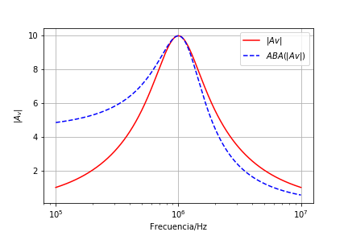
La transfencia en dB
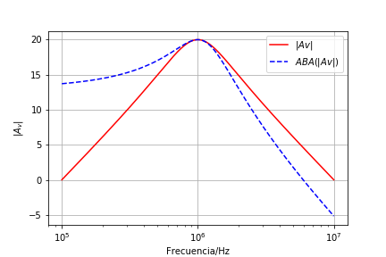
Producto ganancia por ancho de banda¶
El producto de ganancia-ancho de banda (designado como GBP) para un amplificador es el producto del ancho de banda del amplificador y la ganancia con la que se mide el ancho de banda.
Para los transistores, el producto de ancho de banda de ganancia de corriente se conoce como \(f_T\) o frecuencia de transición. Se calcula a partir de la ganancia de corriente de baja frecuencia (unos pocos \(kHz\)) en condiciones de prueba especificadas, y la frecuencia de corte a la cual la ganancia de corriente cae en \(-3 dB\). El producto de estos dos valores puede considerarse como la frecuencia a la que la ganancia de corriente se reduciría a 1, y la ganancia de corriente del transistor entre la frecuencia de corte y la transición se puede estimar dividiendo \(f_T\) por la frecuencia. Por lo general, los transistores deben aplicarse a frecuencias muy por debajo de \(f_T\) para ser útiles como amplificadores y osciladores. En un transistor bipolar, la respuesta de frecuencia disminuye debido a la capacitancia interna de las uniones.
Remplazando
Siendo \(Q_c = R \cdot \omega_o C\)$
Simplificando
Encontramos que el producto ganancia por ancho de banda depende de los parametros del dispositivo activo.
Cuando más pequeño sea \(C\), mayor resulta este producto, es de remarcar que el mínimo valor de \(C\) es la capacidad de salida del dispositivo activo. El producto ganancia por ancho de banda arroja una constante, así si se aumenta la ganancia se disminuye el ancho de banda y viceversa. Si se fija la ganancia el \(Q\) queda dado por esta ganancia.
Amplificador multietapa sincrónico¶
Se colocan en cascada n-etapas simples sintonizadas como las mostradas al principio de la unidad.
La transferencia de una etapa se calcula como:
donde \(\chi(\omega) = 2Q \frac{f- f_o }{f_o}\)
Para la respuesta de n-etapas simple sintonizadas sincronicas
Donde el modulo de la transferencia
Si se dispone de n-etapas simple sintonizadas sincronicas y de igual ancho de banda, a la frecuencia de \(-3dB\) de cada etapa, generada una respuesta de \(n \times -3dB\).
Para calcular el ancho de banda para n-etapas en cascada simple sintonizadas sincronicas, podriamos buscar las frecuencias donde la respuesta es \(\frac{-3dB}{n}\) para una unica etapa.
Entonces, calculando las frecuencias de corte inferior y superior.
El ancho de banda de n-etapas se calcula como
Ejemplo 3¶
Supongamos tres etapa simple sintonizada sincronicas en cascada a la frecuencia de \(f_o = 1MHz\), con un ancho de banda total de \(BW_3 = 100 KHz\). El elemento activo tiene una ganancia de transconductancia \(g_m = 100 mS\) y la resistencia total de la etapa es de \(R_t = 10 \Omega\).
El factor de selectividad de cada una de las etapas \(Q\)
La transferencia de tensión en función de la frecuencia para este sistema empleando aproximación de banda angosta (en escala semilog en la frecuecia).
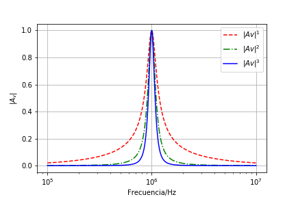
La transfencia en dB
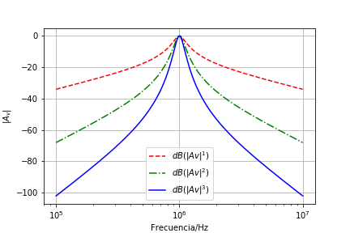
Ejemplo 4, Simple Sintonizado¶
El circuito de la figura corresponde al circuito equivalente simplificado de un receptor de RF. Se desea ampificar una señal de frecuencia \(F_c = 100 MHz\).
Suponer que el inductor tiene un factor de merito de \(Q_o = 50\) y el capacitor tiene un factor de merito de \(Q_o = infinito\).
La fuente tiene una potencia disponible \(P_{disp}= 10 uW\) y su resistencia interna es $r_g=1K:nbsphinx-math:`Omega `$.
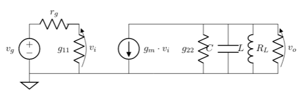
Donde: \(g_{11} = 1.25 mS\), \(g_{22} = 0.1 mS\) y \(g_m = 100 mS\)
Determinar para una atenuación de \(20 dB\) a \(f=120 MHz\) respecto a la frecuencia de sintonia.
Diseñar para máxima transferencia de energía a Q constante:
\(R_L\)
\(Q_{c}\)
\(L\)
\(C\)
\(A_{v_o} = \frac{v_o}{v_g}\)
El ancho de banda \(BW\) del amplificador.
\(P_{in}\) 8 \(P_{R_L}\) 9 Perdidas de inserción.
\(|A_{v_o}|\) para \(80 MHz\), \(90 MHz\) y \(110 MHz\).
Respuestas
\(R_L\)
Para máxima transferencia de energía a Q constante
\(Q_c\)
Para el calculo de \(Q_c\) empleamos la expresión de la transferencia de tensión del simple sintonizado.
Buscamos una atenuación de \(20 dB\) a \(f=120 MHz\).
\(L\)
A partir de \(Q_c\) es posible encontrar el inductor mediante la expresión
donde \(r_{ext} = \frac{r_{22} R_L }{ r_{22}+ R_L} = 5K\Omega5\)
El inductor \(L = 19.86 nHy\)
\(C\)
El capacitor \(C\)
\(|A_{vo}|\)
\(BW\)
\(P_{in}\)
Ganacia de potencia¶
La expresión general para ganancia de potencia es:
La ecuación se aplica a circuitos sin retroalimentación externa.
También se puede usar con circuitos que tienen retroalimentación externa si los parámetros compuestos y del transistor y la red de retroalimentación son sustituidos por los parámetros del transistor y en la ecuación. Los parámetros compuestos y se determinan considerando que el transistor y la red de retroalimentación son dos “cajas negras” en paralelo:
Donde: \(y_{11c}\), \(y_{12c}\), \(y_{21c}\), \(y_{22c}\) son los parámetros compuestos y de la combinación paralela de transistor y red de retroalimentación.
\(y_{11t}\), \(y_{12t}\), \(y_{21t}\), \(y_{22t}\) son los parámetros y del transistor.
\(y_{11f}\), \(y_{12f}\), \(y_{21f}\), \(y_{22f}\) son los parámetros y de la red de retroalimentación.
Tenga en cuenta que, dado que este enfoque trata la combinación del transistor y la red de retroalimentación como una única “caja negra” con \(y_{11c}\), \(y_{12c}\), \(y_{21c}\), \(y_{22c}\) como sus parámetros y, los parámetros compuestos y pueden ser sustituidos, en cualquiera de las ecuaciones de diseño aplicables a un análisis lineal activo de dos puertos.
Los amplificadores neutralizados y unilateralizados son casos especiales de este concepto general, y las ecuaciones asociadas con esos casos especiales se darán más adelante.
La ecuación proporciona una solución para la ganancia de potencia de la red activa lineal (transistor) solamente. Las redes de entrada y salida se consideran parte de la fuente y la carga, respectivamente. Por lo tanto, deben tenerse en cuenta dos puntos importantes:
La ganancia de potencia calculada a partir de la ecuación de \(G\) no tendrá en cuenta las pérdidas de red. La pérdida de la red de entrada reduce la potencia entregada al transistor. La potencia perdida en la red de salida se calcula como salida de potencia útil, ya que la admitancia de carga \(YL\) es la combinación de la red de salida y su carga.
La ganancia de potencia es independiente de la fuente admitida. Una falta de coincidencia de entrada da como resultado que se entregue menos potencia de entrada al transistor. En consecuencia, tenga en cuenta que la ecuación de \(G\) no contiene el término \(Ys\).
La ganancia de potencia de un transistor junto con sus redes de entrada y salida asociadas se puede calcular midiendo las pérdidas de la red de entrada y salida, y restándolas de la ganancia de potencia calculada con la ecuación de \(G\).
En algunos casos, puede ser conveniente incluir los efectos de adaptación de entrada en cálculos de ganancia de potencia. Un término conveniente es ganancia de transductor \(G_T\), definida como potencia de salida entregada a una carga por el transistor, dividida por la potencia de entrada máxima disponible desde la fuente.
La ecuación para la ganancia del transductor es:
En esta ecuación, \(YL\) es la admitancia de carga de transistor compuesta, compuesta tanto de la red de salida como de su carga, e Ys es la admitancia de fuente de transistor compuesta, compuesta por la red de entrada y su fuente. Por lo tanto, la ganancia del transductor incluye los efectos del grado de coincidencia de admitancia en los terminales de entrada del transistor, pero no tiene en cuenta las pérdidas de la red de entrada y salida. Como en la ecuación de \(G\), los parámetros y compuestos de una combinación de red de retroalimentación de transistor pueden ser sustituidos por los parámetros y del transistor cuando se usa dicha combinación. La ganancia máxima disponible (MAG) es una figura de mérito de transistor de uso frecuente.
El MAG es la ganancia de potencia teórica de un transistor con su admitancia de transferencia inversa \(y_{12}\) igual a cero, y sus admitancias de fuente y carga coinciden de forma conjugada con \(y_{12}\) e \(y_{22}\), respectivamente.
Si \(y_{12} = 0\), el transistor exhibe una admitancia de entrada igual a \(y_{11}\) y una admitancia de salida igual a \(y_{22}\).
La ecuación para MAG, por lo tanto, se obtiene resolviendo la expresión de ganancia de potencia general, ecuación de \(G\), con las condiciones:
donde \(*\) denota conjugado, lo que produce:
MAG es una figura de mérito solamente, ya que es físicamente imposible reducir \(y_{12} = 0\), sin cambiar los otros parámetros del transistor. Se puede usar una red de retroalimentación externa para lograr un compuesto \(y_{12}\) de cero, pero luego los otros parámetros compuestos también se modificarán de acuerdo con las relaciones dadas en la discusión del transistor compuesto - red de retroalimentación “caja negra”.
\(G_{max}\)¶
\(G_{max}\), la ganancia de transductor más alta posible sin retroalimentación externa, forma un caso especial del amplificador sin retroalimentación. Las admisiones de fuente y carga requeridas para lograr \(G_{max}\) pueden calcularse a partir de lo siguiente:
La magnitud de \(Gmax\) puede calcularse a partir de las siguientes expresiones:
[ ]:
[ ]:
[ ]: